Advanced triggers
You have just learned in the previous chapter what is a trigger in Zabbix and how to create one. Now we will go deeper and learn, how to create triggers with some more complexity in mind.
So trigger, in its most simple definition or use cases, is a threshold. It is as simple as some metric hitting a limit and our trigger catches it. Take as an example disk space - it grows constantly until reaches some predefined value - say 80% - and we simply evaluate it for each collected value.
However, real world in many cases is more complex than ever growing disk space. Something might be growing and getting cleaned, something might be important only on certain time frames and something might need to join multiple different items into one evaluation. Thus we need to adapt our monitoring approaches and templates to this complexity of real world. Fortunately, Zabbix has it all covered with wide variety of trigger functions and features around trigger logic.
But first things first. There are few fundamental concepts behind advanced triggers which must be understood in order to master them. Let's quickly run through them.
Recovery expression
As mentioned, in most trivial understanding, trigger is just a threshold. But even in such cases, you might want to apply some different threshold for the recovery of specific event - to reduce flapping. Flapping is a constant state switching between "PROBLEM" and "OK" in cases you balance on the edge of the defined threshold.
For the sake of clarity, say that we have value constantly growing but not ever-growing in terms of deltas between two consecutive values. It might go down a little bit and then grow again. Something like this:
#!/bin/bash
# time in seconds for current hour
seconds=$(($(date +%s)%3600))
(( seconds < 2 )) && seconds=2
random=$((RANDOM%$((seconds/2))-$((seconds/4))))
echo $((seconds+random))
exit 0
This script will produce us ever-growing value until the end of each hour, but it will not be growing in linear way.
So in case you have a trigger set to some specific threshold you will face the following situation: trigger switches between "PROBLEM" and "OK" each time this specific threshold is hit.
Now imagine an alert on each of those events! You would receive tens of notifications which would basically talk about one and the same problem. So in order to avoid it, you can keep the original trigger expression, just add recovery expression along. This recovery expression would have smaller value if compared to original problem expression and that is how you would avoid flapping in such situations. It would only fall into "OK" state when the problem is really fixed (beginning of each hour in our example):
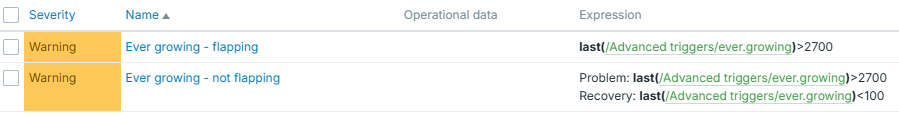
Difference just with this small idea is huge - less monitoring noise, less alerts:
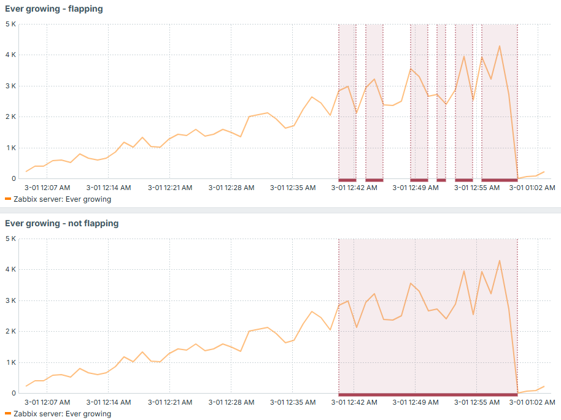
Trigger dependency
Trigger dependency is a simple yet powerful concept to keep your set of active events clean. Imagine same or similar problem but with different thresholds, for example 80% and 90% of used disk space. You would not like to have two triggers in "PROBLEM" state once you suddenly reached 95% of used disk space. So in this case, trigger with lower threshold can depend on the one with higher threshold and produce only single event, because in this particular case it is useless to state that you reached 80%.
You can think of more use cases where trigger dependency might be useful. It can be applied not only to evaluate same metric with several different thresholds, but also to implement some other hierarchy-based type of checks. For example, you can choose to not display HTTP based checks if ICMP ping fails (check OSI model).
For example, say we have set of HTTP based triggers, which would show something wasn't retrieved successfully - either there was no HTTP 200 in response headers or no response received at all during last 5 minutes. Why this second part you may ask, why not just evaluating returned status code? Well - timeout, expired certificate, DNS not resolving target - are all as bad as getting non 200 HTTP response status code, when you expect one. If you have a trigger which is simply evaluating such item's values, you would miss this "other" type of failures, because they don't mean any code - there is simply no code returned (check OSI model once again). Since no code is returned, our item will not store anything.
Similar goes to ICMP ping trigger - it checks if ping failed or there was no data for last 3 minutes:
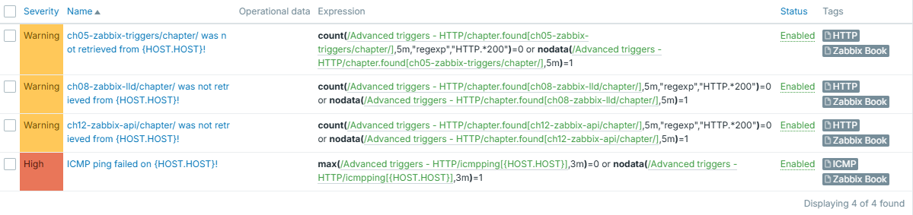
Info
Disclaimer: these triggers are not perfect since nodata() might fire for
short time immediately after the template is applied due to no data being
there yet. However, it serves the purpose of demonstrating the importance
of trigger dependency.
Let's apply it to "thezabixbook.com" host - and it has a typo (note double "b" is missing in the "zabbix"). What happens, is that data can't be retrieved, host can't be pinged:
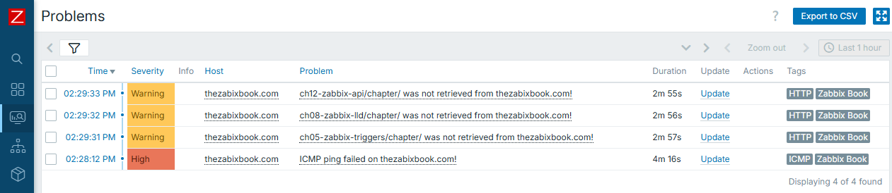
Result is obvious and expected - you have all the triggers displayed. However, what if there were much more triggers to be displayed, and even worse, each of them having some alerting on top? You would most likely wish to receive just one notification instead of many in this very case.
So here comes the "trigger dependency". We will configure all HTTP based triggers to depend on ICMP ping one. It is done in trigger configuration, tab "Dependencies":
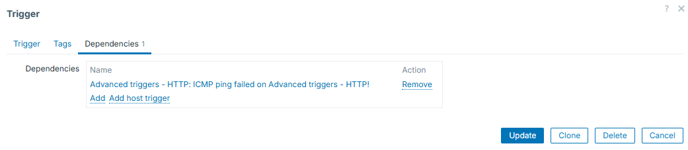
Keep in mind that you are not limited to just one dependency - you can add more. Once added, all the triggers for which you configure dependencies, will display them under their names:
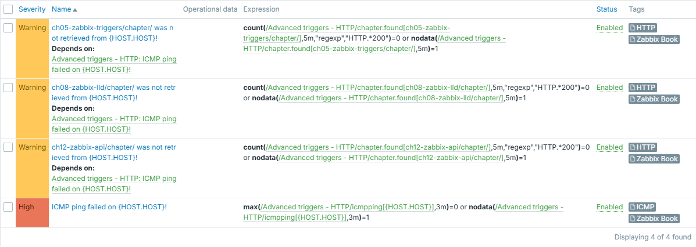
And we can see that from now on, only one event is generated and displayed:
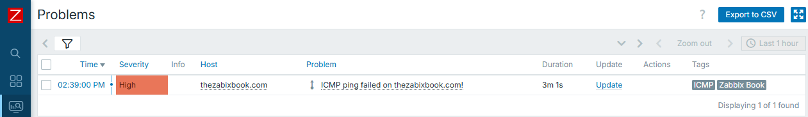
Tip
You can see that our HTTP based triggers are configured for 5 minutes of failures or "silence" and ICMP ping one uses 3-minute windows. This is done on purpose - if same window was used, HTTP triggers could fire first, before the ICMP ping trigger appears - depending on which item values are collected first. So we use shorter evaluation interval on "more important" trigger in order to avoid even this short appearance of the ones that depend on it.
Context macros
Context macros can help you set different thresholds for different checks of same nature. This is extremely useful in the world of LLD - you can have one macro for some "default" threshold and override it, if needed, by providing some context to it. For example, different file systems can have different thresholds.
Here we have different thresholds for different discovered entities. Default is 95 and we have two exceptions:
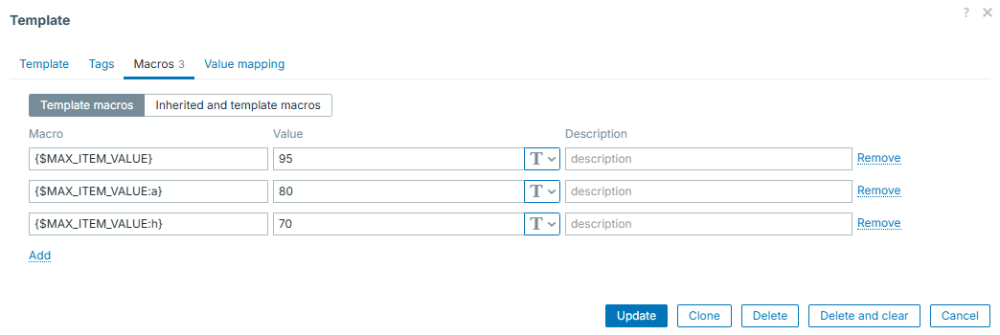
So the trigger prototype will look like:
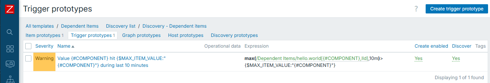
And real events will then be like this (note the different thresholds for "a" and "h"):
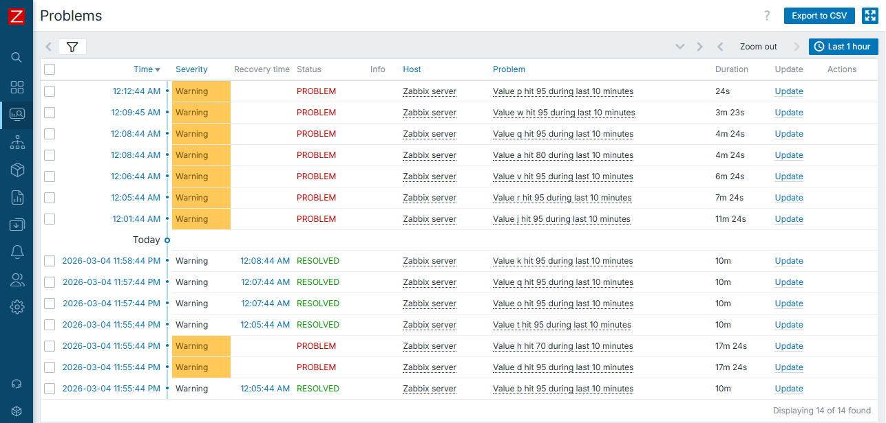
While constructing advanced triggers, you will find this concept being nicely incorporated into the big picture of trigger efficiency.
Macros in trigger names
In most simple case, trigger / event names are static text. However, it is very useful to understand, that certain macros are supported in trigger names as well (see "Useful URLs" section, "Macros supported by location"). To add even more, not only macros themselves, but also macro functions are supported. So, for example, you can extract certain parts of collected item value and put it directly into event name. This makes your monitoring setup dynamic, flexible and professional. Also, this works very well in combination with "Multiple PROBLEM event generation", so let's look into it in more details below.
Multiple PROBLEM event generation
This one is kind of trivial - you can choose to generate either single PROBLEM event or many of them if the same trigger condition is being met multiple times. This is useful if the same item collects many different things. Then you might use "Multiple" to create event on each and every unique case caught by such item. For example, imagine catching all the lines from web server log, where HTTP 404 status code was returned. You can catch those as multiple events, and, as we just learned, display some more details (e.g. path in this case) directly in trigger / event name:
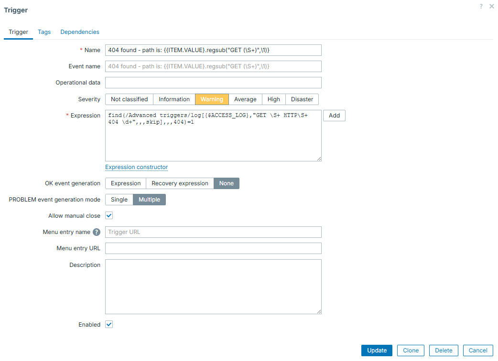
This item / trigger combination will catch and display all of the 404 lines, with exact path of URL that was "Not found":
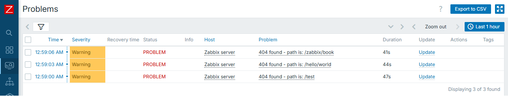
In this case, real access log lines were the following:
192.168.1.253 - - [04/Mar/2026:22:58:59 +0000] "GET /test HTTP/1.1" 404 491 "-" "Mozilla/5.0 (Windows NT 10.0; Win64; x64) AppleWebKit/537.36 (KHTML, like Gecko) Chrome/145.0.0.0 Safari/537.36"
192.168.1.253 - - [04/Mar/2026:22:59:03 +0000] "GET /hello/world HTTP/1.1" 404 491 "-" "Mozilla/5.0 (Windows NT 10.0; Win64; x64) AppleWebKit/537.36 (KHTML, like Gecko) Chrome/145.0.0.0 Safari/537.36"
192.168.1.253 - - [04/Mar/2026:22:59:05 +0000] "GET /zabbix/book HTTP/1.1" 404 491 "-" "Mozilla/5.0 (Windows NT 10.0; Win64; x64) AppleWebKit/537.36 (KHTML, like Gecko) Chrome/145.0.0.0 Safari/537.36"
See the beauty here? Displaying only the part that matters for us. And nothing else but simple regexp and native Zabbix features does it!
Warning
Be careful when using "Multiple" and nodata() function in the same
trigger. This will lead into new problem event each time trigger is
evaluated.
Following the previous warning, here is an example of such setup:
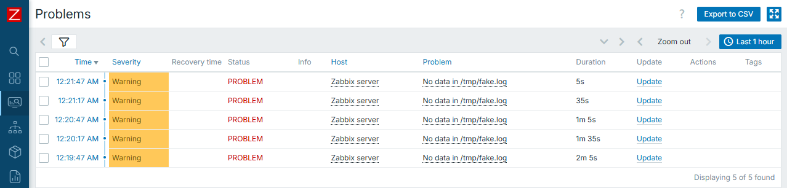
Know your data
Last thing worth to be mentioned here is the most simple one, however, it might be the most important one!
There is no silver bullet when we talk about complex data evaluations. Thus first you need to know very well, what are you collecting and what to expect from the data that you collect. With such understanding, you can apply correct triggers on top of your data with much more ease. So if uncertain about what exactly is it to be collected, it is good idea not to rush with the triggers at the same moment you create items. Simply leave data collection part working for a while and construct triggers once you gather some knowledge about potential correct trigger expressions.
Examples
Now that we have some prerequisites covered, let's proceed with several examples of the triggers that might be considered as "advanced".
Again, these are just few examples and there are much more trigger functions to be used, we can't cover each and every of them. Also, specific function (or combination of them) to be used highly depends on the nature of data that is collected.
Time component
One of the most simple examples that can make simple triggers more advanced is adding time component to it. Zabbix has multiple different functions for this. For example, you have trigger which is important only on day time, so you can easily do this:
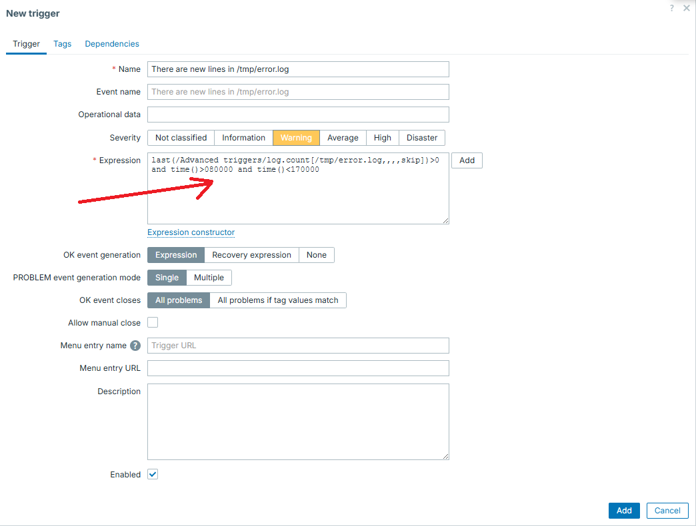
In similar way, you can "split" the trigger into several different ones, for example have different thresholds or severity level for the same metric over the day and night or for working days and weekends. Adding time component is also useful to reduce noise caused by some known heavy activities, which would otherwise cause triggers to appear - say some nightly backup process.
Reducing flapping even more
While explaining recovery expressions, we were still operating in simple thresholds. However, no one limits you to use only them.
For example, say that under normal conditions our metric is typically "0", but might sometimes have short few minutes long spikes. Under real "incident", value rises and stays there for longer than "few minutes", however it might as well fall back to "0" for a minute and go back to higher values.
Given all those conditions, simple "threshold" type of a trigger (based on evaluating just "last" value) is not enough, even if used with another threshold for recovery.
That is where we can go with some more complexity in mind. We can evaluate not
a single value, but several values in a row with functions min(), max(),
sum() or avg().
For example, we will treat any big spike lasting for 3 minutes in a row as an incident, as well as treating incident is over only if it drops and stays low for 10 minutes in a row:
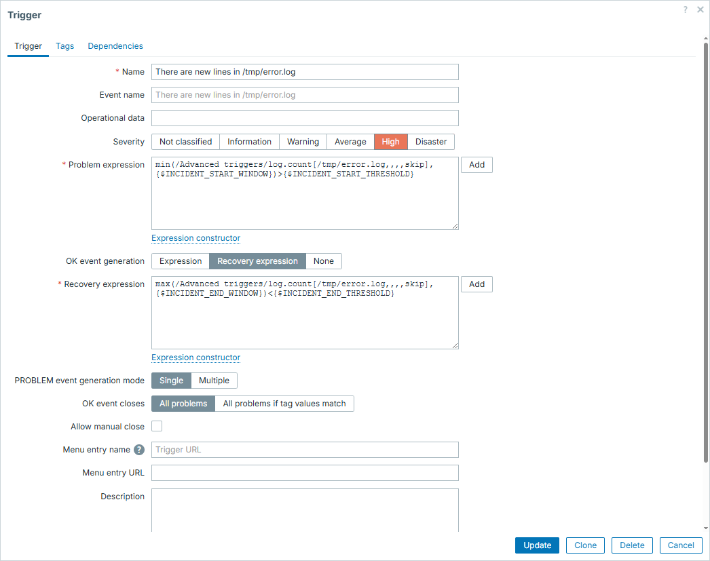
Macros in this trigger configuration are set accordingly:
{$INCIDENT_START_WINDOW} => 3m
{$INCIDENT_START_THRESHOLD} => 100
{$INCIDENT_END_THRESHOLD} => 5
{$INCIDENT_END_WINDOW} => 10m
So now let's illustrate how it would look like during real incident:
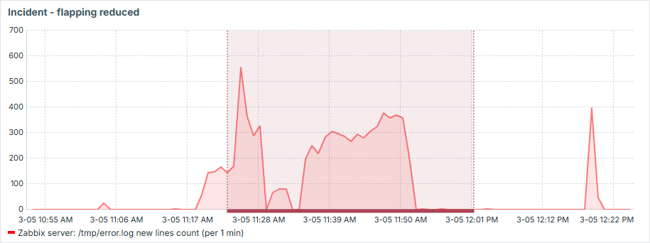
See that it works exactly as we wanted:
- we have only one event produced here
- short drops during the "incident" don't resolve the issue
- "incident" is only resolved if there is 10 minutes of "silence"
- short spikes, even above threshold, don't cause "incident"
Is it stuck?
In this example we have an item which stays at "0" most of the time and once in a while shows some big number, which gradually goes down back to "0". This collected number being greater than 0 is not a problem on its own, problem is when it goes down and never reaches zero - it kind of gets stuck. Imagine some queue to be processed and such item showing records in this queue.
So what we want to catch here is this "stuck" situation. Fortunately, there
is a trigger function exactly for this purpose - changecount(). This function
evaluates number of changes during defined period. Given that constant "0" would
not mean anything wrong, we must combine it with simple threshold and that is
how we can catch the defined issue in fast and reliable way.
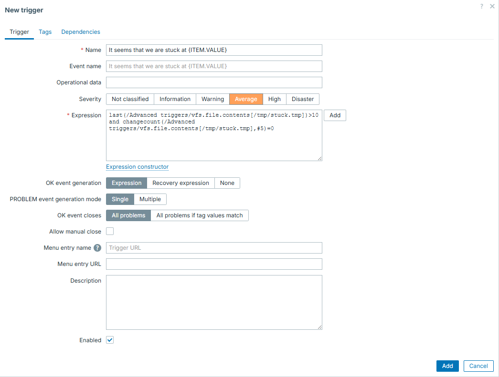
And now we can see it in action - first case is regular processing, second one is stuck - exactly what we intended to catch! After "fixing" it - trigger goes away:
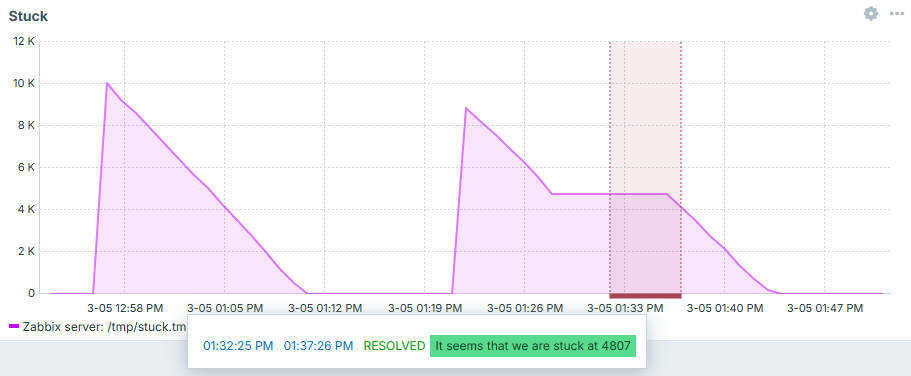
Is it growing fast?
Back to the disk space. We already know how to evaluate disk space in smarter way than simple threshold (flapping reduction with different recovery expression). But we can implement even smarter ideas. For instance, what if we would like to know the fact, that not only used disk space reached some threshold, but it did it fast? This could be useful, because such trigger would most likely indicate more urgent issue than used disk space growing at regular pace.
First you need delta - be it separate item or trigger level evaluation. Separate item brings more clarity - you can put it into graphs and get a visual picture of what has happened.
Then comes the trigger logic itself. Here in this example you see a threshold of 60% and growing tempo (sum of delta values) per 10 minutes is set to 1%. Recovery expression expects used disk space value to either drop below 55% or growing tempo to be less than 1% during 30-minute window.
Full trigger configuration is this:
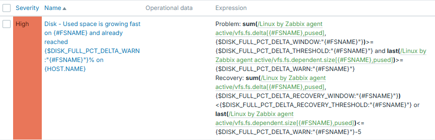
Macros in this trigger configuration are set accordingly:
{$DISK_FULL_PCT_DELTA_WARN} => 60
{$DISK_FULL_PCT_DELTA_THRESHOLD} => 1
{$DISK_FULL_PCT_DELTA_WINDOW} => 10m
{$DISK_FULL_PCT_DELTA_THRESHOLD} => 1
{$DISK_FULL_PCT_DELTA_RECOVERY_WINDOW} => 30m
From trigger expression it is clear, that we use context macros here. So these thresholds can be adjusted per each filesystem.
And we can see how nicely it works. If disk used space grows slowly - trigger is silent. If disk grows fast, but threshold not yet reached - trigger is silent. And only once it grows fast and 60% is reached - we know about it:
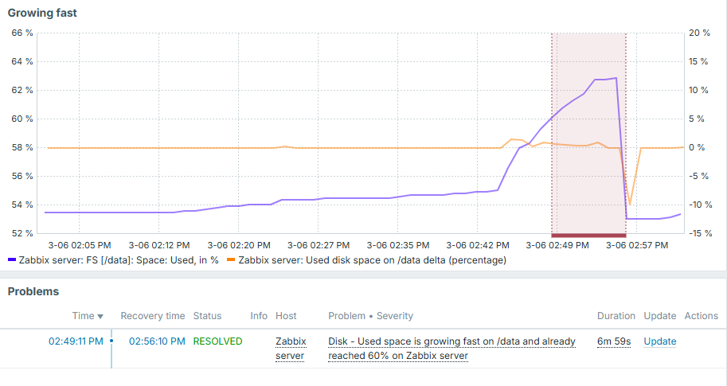
Note that delta value here is displayed on right Y axis and overall used disk space is on the left.
We discussed disk space here, but this approach can obviously be applied anywhere else. It can also be applied in the opposite manner - if something drops too fast.
Conclusion
You can't construct perfect triggers without perfectly knowing the data that you collect in the first place. By understanding what you collect, you have a wide variety of trigger functions provided by Zabbix to evaluate this data. Don't think of triggers as being simple thresholds, unless it is really something that you truly need. By exploring possible trigger functions and being creative, you will be able to create advanced trigger logic, which will help to reduce noise on monitoring events and improve monitoring quality.
Questions
- Is there a way to specify different condition to close the problem, than the one under which it started?
- Are triggers capable to evaluate only the latest collected item value?
- Can we apply more that one trigger function in same trigger?
- Can one trigger evaluate multiple different items?